Начиная с CRYENGINE 3.8 этот документ был заменен на Урок по системе крепления – Character Tool.
Обзор
Конвейер персонажей использует систему прикрепления символов, которая позволяет прикреплять отдельные объекты static к стыкам или непосредственно к полигональным граням меша и обновлять их вместе с анимированным персонажем.
Это автономный объект, который можно заменить или отсоединить во время выполнения игрового кода и упасть на землю под действием силы тяжести. Также можно использовать насадки для кожи для замены целых частей тела, таких как голова, руки или верхняя и нижняя часть тела.
Загрузите и извлеките файл Attachment_exampleFiles.rar в вашем каталоге объектов. Пример: <root>\GameSDK\Objects\Attachment_exampleFiles\Bone_attachment_simulateSocket
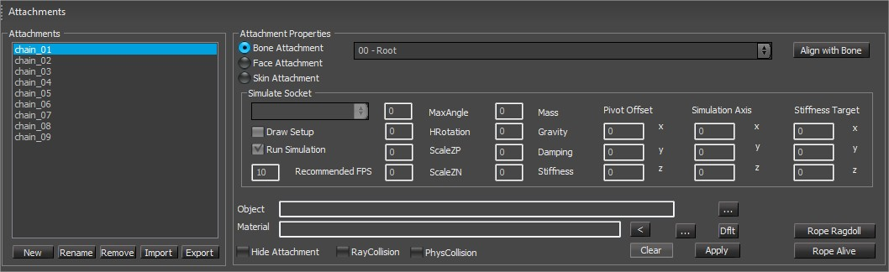
Прикрепление кости
К суставу прикрепляются костные приспособления. Местоположение может быть «относительно» выбранного сустава или оно может быть идеально совмещено с выбранным суставом, если вы установите флажок «Выровнять прикрепление кости».
Приложение для лица
Прикрепления к граням проецируются на поверхность меша (только к одному конкретному треугольнику) и всегда остаются на поверхности сетки, даже если скин-сетка сильно деформируется. Расположение крепления лица может быть относительно лица. Костные крепления этого не делают. Начиная с SDK3.5, вы можете назначать прикрепления граней ко всем сеткам, даже если эти сетки являются частью прикрепления кожи.
Лицевые крепления позволяют быстрее создавать прототипы. Для прикрепления костей вам нужна кость в модели, а добавление этих костей сложное, отнимает много времени, и только технические художники с установленным Maya/Max могут это сделать. Вложения для лица проще использовать для быстрых экспериментальных настроек, и каждый может сделать это в CharEdit.
Прикрепление кожи
С помощью скинов-насадок можно заменять части тела (голову, руки, ноги). Каждый скин-аттач может иметь свои особенности персонажа (морф-мишени). Вложение скина может иметь анимацию NO. Чтобы анимировать скин-приложение и деформировать его сетку, всегда используйте позу скелета базового персонажа.
Существует несколько особых имен для вложений, которые определяют, будут ли они отображаться в формате 1p или 3p. Они перечислены внутри Player.cpp под SetupPlayerCharacterVisibility.
Например, голова игрока не отображается в 1p, потому что она называется «голова» в символе CDF, а «голова» определяется как ppThirdPersonPart в этом файле.
Прикрепленные сокеты и вторичная анимация
Часть 1: Настройка креплений-розеток
Если вы хотите прикрепить что-то к персонажу, первым делом нужно создать «пустой» сокет вложения. «Розетка» — это слот для подключения, в котором ничего нет. Пустые сокеты также могут использоваться игровым кодом для подключения (и обработки) типичных игровых объектов, таких как CEntityAttachment, CLightAttachment или CEffectAttachment. В таком случае мы используем систему прикреплений для фактического обновления игрового кода. В окне вложения вы можете создать новый вложение-гнездо, выбрав тип вложения (Кость, Лицо или Кожа).
- В окне прикрепления вы можете создать гнездо для прикрепления к кости, выбрав имя сустава, произвольное имя прикрепления, а затем нажав кнопку «Применить». Чтобы выровнять его по ориентации сустава, нажмите «Выровнять по кости». Внутри сокета для прикрепления к кости хранится имя, местоположение относительно выбранного сустава и имя сустава, к которому он прикреплен. Вы можете визуализировать все пустые сокеты на модели с помощью консольной команды ca_DrawEmptyAttachments=1. В «поле объекта» вы можете выбрать файл для геометрии static и вставить его в сокет. Нажмите «Применить», подключите CGF к розетке. С помощью инструмента перемещения и вращения можно разместить гнездо относительно соединения.
- В окне вложения вы можете создать сокет для крепления лица, выбрав произвольное имя вложения и нажав кнопку «Применить». Внутри пустое гнездо для присоединения грани хранит имя и местоположение относительно выбранного сустава. Вы можете визуализировать все пустые сокеты на модели с помощью консольной команды ca_DrawEmptyAttachments=1. В «поле объекта» вы можете выбрать файл для геометрии static и вставить его в сокет. Нажмите «Применить», подключите CGF к розетке. Изначально гнездо для крепления лица размещается в корне персонажа. С помощью инструмента перемещения и вращения можно переместить его в нужное положение и убедиться, что он привязывается к нужной грани.
- В окне вложения вы можете создать сокет для скина-вложения, выбрав произвольное имя вложения и затем нажав кнопку «Применить». Внутри пустой сокет для вложения скина хранит только имя вложения. В «поле объекта» вы можете выбрать файл .SKIN и подключить его к сокету. Нажмите «Применить», подключите SKIN к розетке. Файл .SKIN — это файл, который имеет собственный скелет, и очень важно, чтобы имена скелета во вложении скина были идентичны именам костей в базовом скелете. Прикрепление кожи может (и должно) иметь меньше костей, чем базовый скелет. Для достижения максимальной эффективности в насадке кожи должны быть только кости, необходимые для деформации части тела.
Также возможно изменить прикрепление лица к кости (и наоборот) после его создания. Просто выберите новый тип и нажмите кнопку «Применить». Преобразование прикрепления кожи в кость или лицо не имеет практического смысла.
Объекты-поле
Выбор объекта для сокета.
Материальное поле
Выбор материала порученного объекта. Здесь отображается имя материала, назначенного объекту, а справа — кнопка для просмотра и прикрепления другого объекта «…». Dflt назначает материал по умолчанию.
Кнопка очистки
Удаляет назначенную модель из сокета вложения. Он не удаляет сам сокет.
Применить
Назначьте модель анимационному сокету (CGF или SKIN).
Флажок «Скрыть вложение»
Скрывает выбранное в данный момент вложение. Эту функцию можно установить по умолчанию и сохранить в файле, но обычно это функция времени выполнения.
Часть 2. Использование сокетов для вторичной анимации
Система прикреплений в SDK3.5.5 поддерживает имитацию движений прикреплений к костям и лицу. Этот тип анимации всегда является реакцией на предыдущее (первичное) движение, поэтому их называют вторичными анимациями. Эта функция является расширением уже существующей системы.
- Его можно использовать для улучшения движения прикрепленных static объектов (например, ножен меча, карманов, оружия).
- Также возможно моделировать части сетки напрямую (т. е. имитацию жира, мышц, живота, груди).
- И, наконец, можно создавать сложные наборы веревок для имитации волос, щупалец, кожаных ремней, цепей, ожерелий и всех других типов свисающих частей персонажа. Веревки могут быть немного более сложными, чем те, которые мы использовали до сих пор с CryPhysics, то есть они могут иметь ветвящиеся струны и разные физические свойства для каждого звена.
Для аппроксимации физического движения объектов на персонажах мы используем свойства пружин и маятника:
- Маятник определяется как качалка, соединенная с неупругим стержнем, который совершает простое гармоническое движение, раскачиваясь вперед и назад. Положение равновесия неограниченного маятника — это положение, когда груз висит прямо вниз. В нашем случае свободное качание можно изменять с помощью физических параметров (жесткости и жесткой цели) и ограничивать различными прокси (т. е. конусами, полуконусами или шарнирными плоскостями).
- Пружина определяется как боб, соединенный с упругим стержнем. В отличие от типичной винтовой пружины, эта пружина может растягиваться в любом направлении, но движение пружины может быть ограничено сферой, эллипсоидом, полусферой, плоской плоскостью или простой линией.
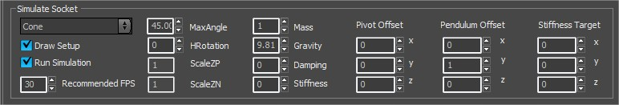
Вариант | Описание |
|---|---|
Раскрывающийся список | Здесь представлены опции для Нет физики, PA_Cone, PA_HalfCone, PA_HingePlane и SA_Ellipsoid. Все прокси, начинающиеся с PA_ активируйте симуляцию маятника. |
Настройка рисования | Вы можете включить/выключить настройку отладки. Если включено, отображается зеленый конус, полукод или шарнирная плоскость. |
Запустить симуляцию | Активирует симуляцию. Если этот параметр отключен, прикрепленный объект отображается в позе по умолчанию. |
Рекомендуется FPS | Моделирование с высокими значениями жесткости требует более высокой частоты обновления моделирования, чтобы гарантировать точное и стабильное моделирование. Вы можете выбрать значения от 10 до 255. |
MaxAngle | Позволяет выбрать угол открытия для таких прокси, как конус, полуконус или шарнирная плоскость. |
Вращение | Вращает шарнирную плоскость, полуконус или эллипсоиды. Это не оказывает видимого влияния на конус. |
ScaleZP | Активен только для пружин. Он масштабирует положительную половину сферического прокси. |
ScaleZN | Активен только для пружин. Он масштабирует отрицательную половину сферического прокси. |
Масса | Определяет массу боба. Поскольку long, поскольку жесткость равна 0, масса не влияет на период колебаний. |
Гравитация | Значение по умолчанию 9,81 м/сек. — стандартное ускорение падающих объектов под действием силы тяжести на Земле. |
Демпфирование | Имитация эффектов сопротивления воздуха и трения. Более высокое значение демпфирования заставит колеблющиеся объекты быстрее прийти в состояние покоя. |
Жесткость | Значение от 0 до 999. Значение 0 вообще не имеет жесткости, и маятник будет висеть вниз, когда придет в состояние покоя. |
Смещение поворота | Регулирует точку поворота оси. По умолчанию это центр модели, который не всегда является естественным центром симуляции. |
Ось моделирования | Это вектор с направлением и длиной, который определяет стержень маятника по умолчанию. Длина стержня оказывает большое влияние на амплитуду маятника. |
Цель жесткости | Это вектор. По умолчанию она идентична оси моделирования (= стержень маятника). Целевая жесткость различна для маятника и пружин:
|
А) Добавьте симуляцию в сокет
Сокет создается, как описано в части 1 «Настройка сокетов вложения». Затем вам нужно подключить CGF к сокету.
Тип, размер и форма CGF (меч-ножны, пистолет, кинжал) не будут влиять на симуляцию, но они определяют, какую настройку вы выберете, поскольку мы можем только имитировать поведение реального физического объекта.
Чтобы добавить динамическую симуляцию, просто откройте RollupBar в разделе «Имитировать сокет» и выберите PA_Cone, PA_Hinge, PA_HalfCone или SA_Ellipsoid. Первые три — это средства ограничения движения маятника.
Последний (эллипсоид) ограничивает движение пружины. Эллипсоид — это сфера, из которой, как из глины, можно слепить неоднородный эллипсоид, полусферу, плоскость или одну линию.
Теперь у вас есть физический разъем, который реагирует на движения персонажа. Вы можете визуализировать это с помощью «Настройка рисования».
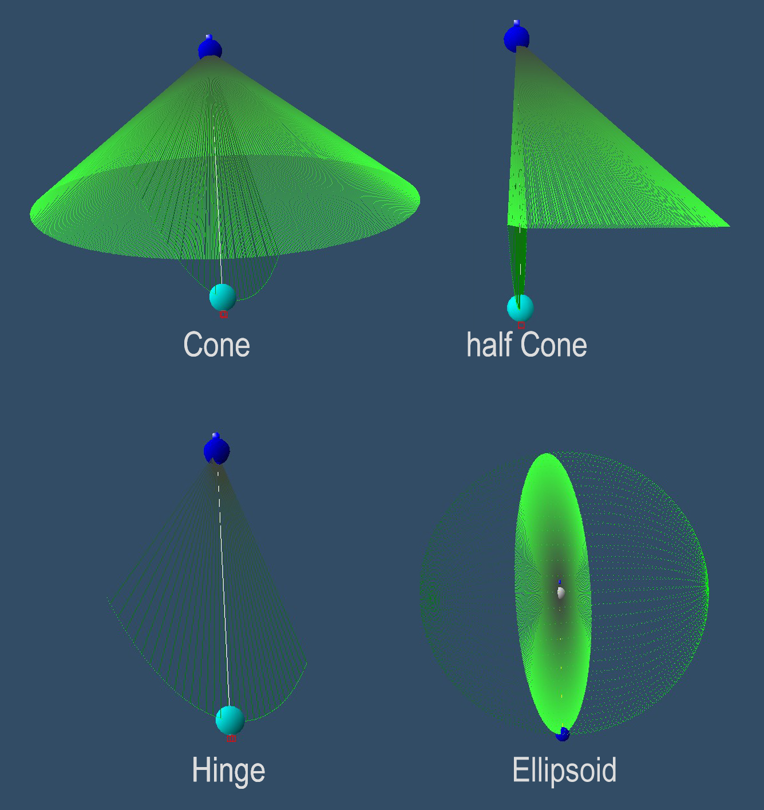
После того, как у вас есть базовые настройки, вы можете поиграть с физическими параметрами (масса, гравитация, демпфирование, жесткость). Вы можете редактировать все эти параметры во время воспроизведения анимации персонажей и сразу же увидеть эффект.
Для настройки динамики предполагается, что пользователь имеет базовое представление об этих параметрах и их взаимосвязи.
Добавление геометрии static в моделируемые гнезда и треугольник столкновения (неофициальная функция)
Прикрепите объект static с треугольником столкновения к пустому сокету.
Пример файла: Objects\Attachment_exampleFiles\Bone_attachment_triangleCollision\leggun.cdf
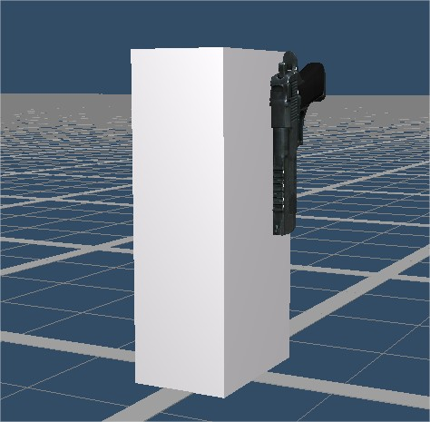
Загрузите экспортированный или загруженный файл LegGun.chr и начните добавлять новый пустой сокет. Туда на этот раз мы прикрепим пистолет, чтобы сымитировать «бедро» с прикрепленным пистолетом.
Проблема здесь в том, что конус, например, может пройти сквозь ногу, и без столкновения симуляция не будет выглядеть правильно.
Одним из решений было бы использование полуконуса, но лучше было бы использовать вариант с приводом от кости, чтобы обеспечить охват всех движений.
Для этого мы можем назначить каждому гнезду 3 кости, которые соединятся и создадут плоскость столкновения (примером для действительно long волос может быть добавление к каждой плечевой кости «треугольной кости» и одной на тазе).
Эту функцию необходимо добавить в файл cdf в текстовом редакторе. Мы просто добавляем строку, которая определяет кости треугольника столкновения.
Давайте откроем Objects\Attachment_exampleFiles\Bone_attachment_triangleCollision\leggun.cdf файл в текстовом редакторе.
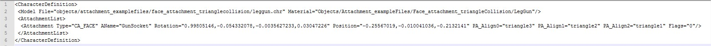
Добавление PA_Align0="bonename01" PA_Align1="bonename02" PA_Align2="bonename03" во вложение позволит нарисовать треугольник столкновения.
Треугольник столкновения будет создан против часовой стрелки, поэтому мы начинаем в leggun.cdf с костного треугольника3 – треугольника1.
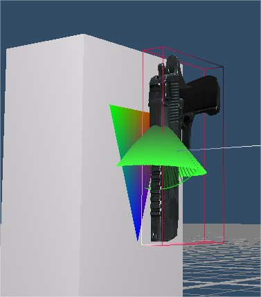
Установка работает только в том случае, если вы видите цветной треугольник в районе трех костей. Чтобы протестировать актив, вы можете просто перетащить компакт-диск как geomEntity на уровень и переместить его с помощью гизмо.
Еще одним интерактивным примером может быть замена cdf локального игрока. Загрузите и замените sdk_player.cdf существующим (или только в .pak-файле) на GameSDK\Objects\characters\human\sdk_player\sdk_player.cdf.
Б) Перенесите симуляцию гнезда в соединение.
В этом случае моделируемые объекты могут быть частью сетки персонажа (а не отдельными CGF). Основной мотивацией для этой функции была оптимизация потока рендеринга.
Поскольку все моделируемые объекты могут быть частью сетки, мы можем добавлять вторичные анимации без дополнительных вызовов отрисовки. Таким образом, если модель имеет 256 висячих объектов, но все объекты являются частью одной сетки с одним и тем же материалом ID, то всем им потребуется только один вызов отрисовки.
Уменьшение количества вызовов отрисовки — самое важное, если вы хотите оптимизировать поток рендеринга. Поскольку это очень легкая функция, оказывающая минимальное влияние на CPU, она отлично работает на PS3 и X360.
Чтобы перенести симуляцию сокета на соединение, сначала вам необходимо создать и физикализировать сокет, как описано в разделе 2а).
Чтобы анимировать сустав напрямую (и все, что привязано к этому суставу), вы должны оставить «поле объекта» пустым и дать имени вложения то же имя, что и имя сустава. Убедитесь, что имя вложения написано строчными буквами.
Вы можете воспользоваться функцией «переименовать» и нажать кнопку «Применить». С помощью этого простого трюка мы перенаправляем смоделированную анимацию на сустав и изменяем всю позу персонажа.
Обновление сустава — это всегда полное обновление всей ветки со всеми ее дочерними элементами. Это означает, что мы можем использовать точно такую же систему для моделирования веревок: сначала мы создаем маятник-симулятор в корне цепи, а затем добавляем новый симулятор для каждого звена.
Абсолютно важно, чтобы веревочные звенья имели дочерне-родительские отношения, иначе симуляция не будет выглядеть корректно.
Пример файла: Objects\Attachment_exampleFiles\JiggleJoint\jellyspoon.cdf
Настройка DCC (3ds max)
Пример актива: Objects\Attachment_exampleFiles\JiggleJoint\jiggleJoint.max
Простая настройка персонажа с костями и геометрией скинов.
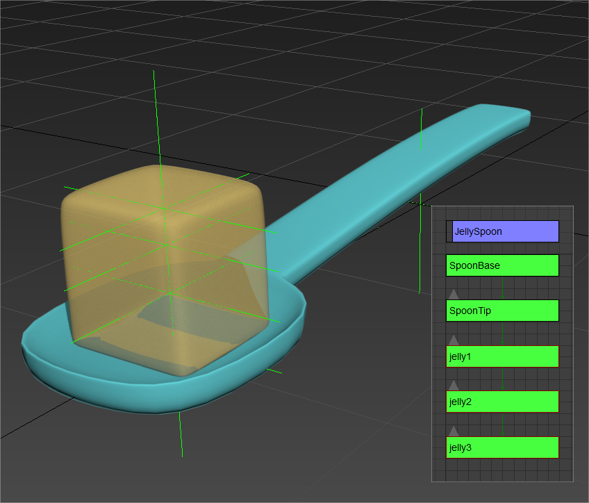 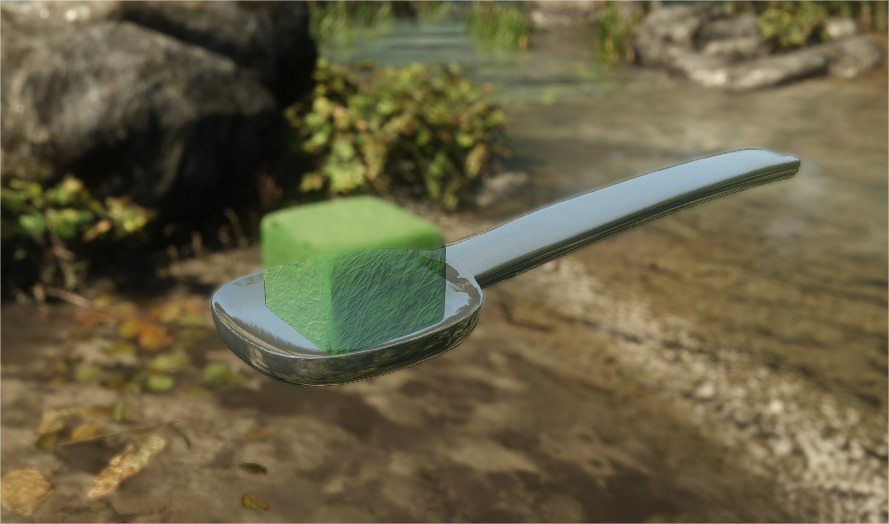
Загрузите экспортированный или загруженный файл примера JellySpoon.chr в редактор символов, добавьте одну кость и переименуйте ее в jelly1, как имя кости, на которую вы хотите повлиять.
После этого обязательно выровняйте SA_Ellipsoid к насадке и отрегулируйте форму и свойства, чтобы получить приятный пружинящий эффект, имитирующий желе.
Расширенная настройка подключения имитации гнезд для цепи/веревки
Настройка DCC (3ds max)
Пример файла: Objects\Attachment_exampleFiles\Pendulum_chain\PendulumChain.max
Пример файла: Objects\Attachment_exampleFiles\Pendulum_chain\pendulum_chain.cdf
В нашем примере файла мы будем моделировать металлическую цепь и простую иерархию костей с элементами геометрии со шкурой. Цепочка начинается с корня и имеет 9 прикрепленных к ней костей в виде иерархии, каждая кость связана со следующей.
Соглашение об именах на этом этапе не важно, и в этом прелесть этой системы: она позволяет использовать уже существующие и экспортированные персонажи для моделирования их костей.
По умолчанию система использует направление Y для моделирования маятника, поэтому мы должны убедиться, что ось Y указывает в направлении оси моделирования. Но в панели прикрепления вы можете установить любую ось в качестве оси моделирования.
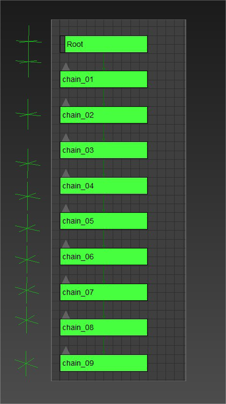 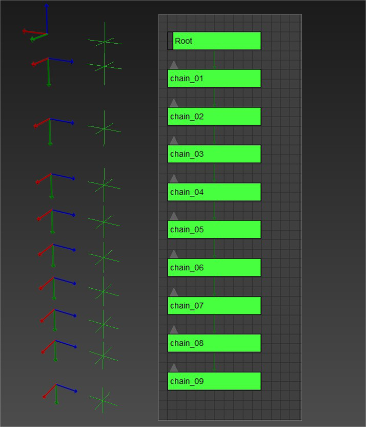 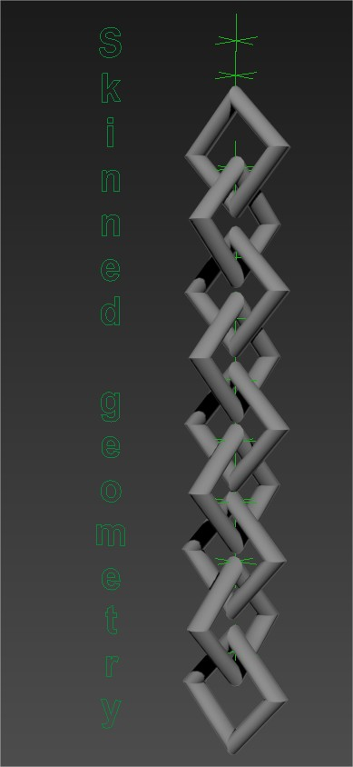
Загрузите экспортированный или загруженный файл примера. Objects\Attachment_exampleFiles\Pendulum_chain\Pendulum_chain.chr в редакторе персонажей и начните добавлять новые вложения.
Нам нужно создать пустое вложение кости, которое будет использовать то же имя, что и кость, которую мы хотим имитировать для нашего файла примера. Убедитесь, что вы создали привязку к кости и назвали ее точно так же, как кость.
Также очень важно писать все названия строчными буквами, иначе система не сможет распознать кость. Примените кость к вложению, нажав кнопку «Применить» в нижней части меню вложения.
Далее необходимо совместить гнездо с моделируемым суставом, нажав кнопку «Совместить с костью». Теперь мы включим симуляцию, назначив примитив симуляции в меню «симулировать сокет».
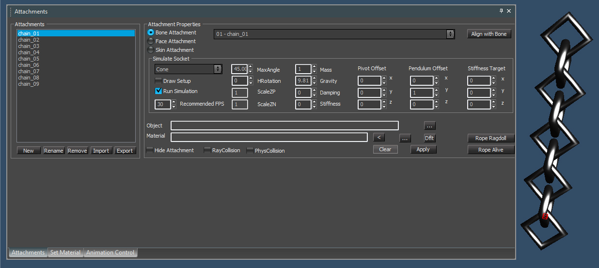
Теперь вы можете поиграться с физическими параметрами (масса, гравитация, демпфирование, жесткость). Вы можете редактировать все эти параметры во время воспроизведения анимации и сразу же увидеть эффект.
Вы также можете загрузить созданный .cdf на уровень леса, перетащив файл chr как geomEntity. Немедленное обновление произойдет только в редакторе персонажей, но вы можете сохранить новые изменения в своем .cdf и перезагрузить сценарии на уровне, чтобы увидеть их обновление на уровне.
Шарнирные крепления (CRYENGINE 3.4 или более ранней версии)
Вложения персонажей на шарнирах используют довольно простой специальный код (непосредственно в системе анимации), который может обрабатывать только вложения с одним шарниром с ограничениями на соединения (они даже не обрабатывают столкновения с персонажем или с другими вложениями).
Чтобы включить подвешивание для конкретного крепления, необходимо указать 2 плоскости, образующие ребро, используемое в качестве шарнира. Плоскости указываются в координатном пространстве вложения. Первая плоскость — это та плоскость, на которой «лежат» приспособление в состоянии покоя, а вторая — другая плоскость, с которой оно контактирует.
Для наиболее типичной ориентации привязанности естественный выбор плоскости будет положительным y, положительным z (+y,+z).
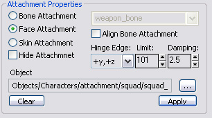
Ориентация прикрепления по умолчанию соответствует углу соединения 0. Максимальный угол поворота указывается как свойство «предел». Используйте свойство «демпфирование», чтобы предотвратить «эффект маятника» (разумны значения до 10, но при необходимости можно увеличить и выше).
Обратите внимание, что изменения вступят в силу только после нажатия кнопки Применить кнопка.
Как определяются плоскости
Ось локальной системы координат можно рассматривать как нормали к одноименным плоскостям. Ось +y является нормалью к плоскости +y. Ось -y — это нормаль к плоскости -y, +z — это нормаль к плоскости +z (см. цветовое кодирование на рисунке ниже).
В приведенном выше примере были выбраны плоскости +y и +z. Между ними создается шарнирная ось.
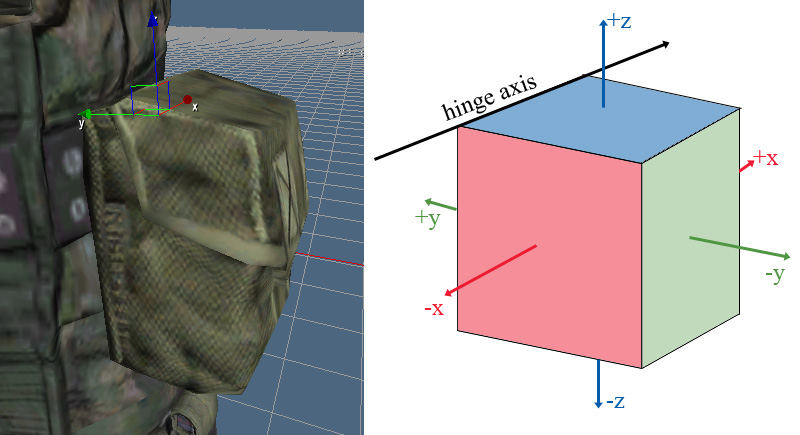